Seomun Market
45 Keunjang-ro 26-gil, Daesin-dong, Jung-gu, Daegu
Korean Street Food
Seomun Market is one of Korea's most active night markets. It has a lot to offer, from hearty Korean dishes to unique street snacks, but its most popular specialties are odeng (fishcakes) and tteokbokki (spicy rice cakes).